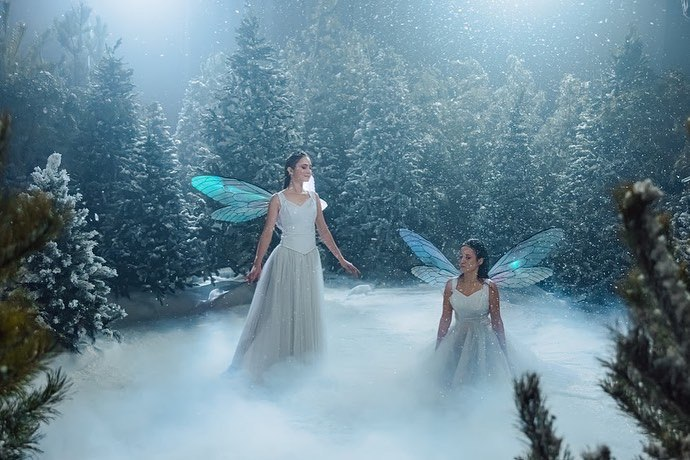
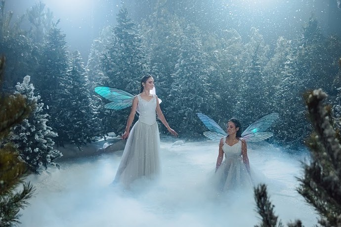

Образование
КНИТУ-КАИ им. А.Н. Туполева, Институт компьютерных технологий и защиты информации, бакалавр по специальности "Информационные системы и технологии"
Опыт/навыки
- Проектирование, подготовка и монтаж декораций на сцену и оформление холла во время студенческих концертов. Монтаж декораций на свадьбах, городских и корпоративных мероприятиях.
- Подготовка и монтаж локаций для фотостудии Sever (2018-2022 гг)
- Монтаж декораций на съёмках клипов, рекламы
- Работа техником сцены на городских и студенческих мероприятиях
Где и с кем работал
Оксана Харитонова (@haritonova_oksana)
- Режиссер шоу/мероприятий/фильмов (@haritonova_show)
- Владелица костюмерной Крылья (@kostumwings) и фотостудии Север (@sever_kazan)
Занимался монтажом локаций для фотостудии Sever с 2018 года
Занимался монтажом декораций для съёмок новогоднего клипа Международной школы Казани
 

Работал техником сцены на городских мероприятиях
Работал техником сцены на корпоративных мероприятиях и свадьбах
ALGA (@alga.show)
- Организаторы крупномасштабных мероприятий
Работал техником сцены на городских и региональных мероприятиях ( День машиностроителя, День химика, Строитель года, Мероприятия в честь 100-летия ТАССР, фестиваль #ВМЕСТЕЯРЧЕ, DeafSkills)
Камиль Юрьев(@kamilfodecor)
- Оформление свадеб
Занимался монтажом фотозон на свадьбах
Студенческий совет ИКТЗИ
Студенческие мероприятия
Занимался проектированием, подготовкой и монтажом декораций на сцену и оформлением холла во время студенческих концертов как для своего факультета, так и для университета (День первокурсника, Студенческая весна, Икариада). Был техником сцены (2017-2020 гг)